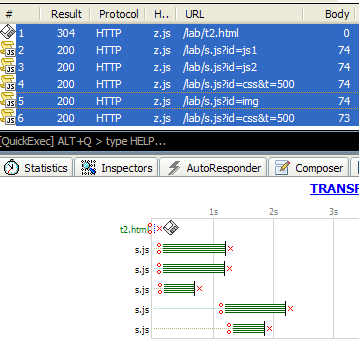
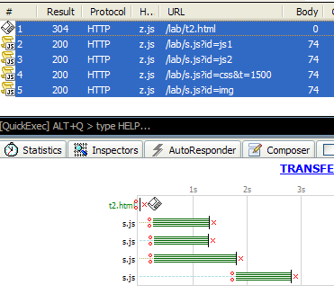

前言
在观察脚本加载阻塞问题的时候，发现Firefox下css的请求有点奇怪。
以下演示或结论都在Firefox下进行
示例
依次发起js，js，css，img四条请求，前3条请求并发，img会被阻塞。
请求URL中 ?id=...&t=... 其中t作为延时标记，用来控制服务器响应延迟的时间，默认延迟1000ms
当css响应快于js，则出现额外请求的问题
演示结果

js阻塞了img的请求，并且多出了 s.js?id=css&t=500 这条请求
当css响应慢于js，则正常
演示结果

css阻塞了img的请求，不过已经不再多出 s.js?id=css&t=500 这条请求
迟于js发起却先完成的css请求出现重复请求的问题
演示结果
t=200,410,420 的请求皆正常，t=300,360出现异常
红色下划线标记的请求为额外产生的，并且对img造成了更多时间的阻塞
初步结论
- js或者css都会阻塞img加载
- css加载务必要放在js前面，否则可能会产生额外请求并导致阻塞（？）
意外发现
在js后面的css请求，遇404或者错误mimetype的css文件时都会发起额外的请求。